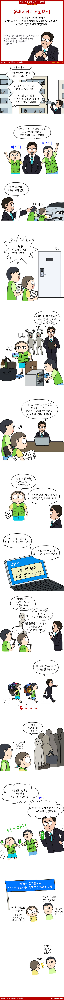

혈세 지키기 프로젝트!

결손처리 세금 체납액
· 2014년 7.8조
· 2015년 8.0조
· 2016년 8.2조
· 2017년 7.4조
금액이 어마하네요. 저게 뭘까요? 아직 받지 못한 체납금일까요?
아닙니다. 못 받는다고 판단하여 매 해 결손처리되는 체납금액이랍니다. 저렇게 큰 돈을 받을 수 없다고 판단하여 받는걸 보류하는 것이지요. 왜 저리 큰 금액을 받지 않고 결손처리 하는걸까요? 바로 악성 체무자들 때문이지요. 한해 수 조의 체납금이 발생하는데 이 금액의 대부분이 잘사는 지역에서 발생했다는 것이지요. 2017년 강남,서초,송파 3구에서만 체납액 3조2천억이 발생했다고 하더군요. 그러니 얼마나 돈 많은 이들이 안내는지 알겠지요?
문제는 이렇게 돈 있는 자들이 많이 안내는 데 이걸 못받아서 나중에는 결손처리된다는 겁니다. 이거 너무 억울하잖아요.
결국인 미친듯이 받아내면 되는건데 그걸 안하니까 문제인거죠. 이걸 받아보겠다고 나선 곳이 있었으니 바로 성남시!
· 차량영치 (번호판때기)
· 직접 집에가서 안내.
· 체납시스템 시행.
· 주거압류.
· 은행, 금고 압류.
· 주민등록증 말소.
· 해외 출국 금지.
기존에 타 지자체에서 진행하는 방식들과 새로운 방식 모두 이용해서 받아내 60% 이상을 회수했다고 하네요. 이제는 이 방식이 경기도에도 적용된다고 하니 알아서들 잘 내지 않을까요? ㅎ